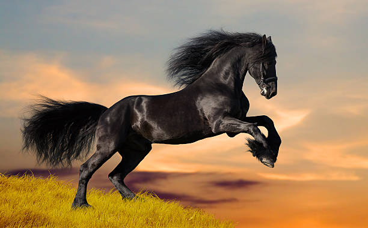

Hábitat y estilo de vida de los caballos El Caballo es un animal que generalmente vive en praderas, llanuras y campos abiertos, donde tiene suficiente espacio para correr y alimentarse. Son animales herbívoros que comen principalmente pasto, hierbas y heno. Los caballos suelen vivir en manadas, lo que les ayuda a protegerse y convivir socialmente con otros caballos. Son animales muy activos y necesitan moverse con frecuencia durante el día.
Algunas características de los caballos son:
- Son mamíferos.
- Tienen gran velocidad y resistencia para correr.
- Poseen cuatro patas fuertes con cascos.
- Tienen crin (pelo en el cuello) y cola larga.
- Son animales inteligentes y fáciles de domesticar.